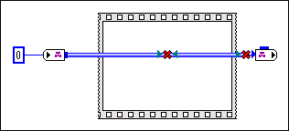

JavaScript is disabled. Details
This channel wire enters and leaves the same structure. Because channel wires do not create dataflow dependency, it is semantically meaningless for a channel to pass through a structure. You must wire around the structure instead of through it.
